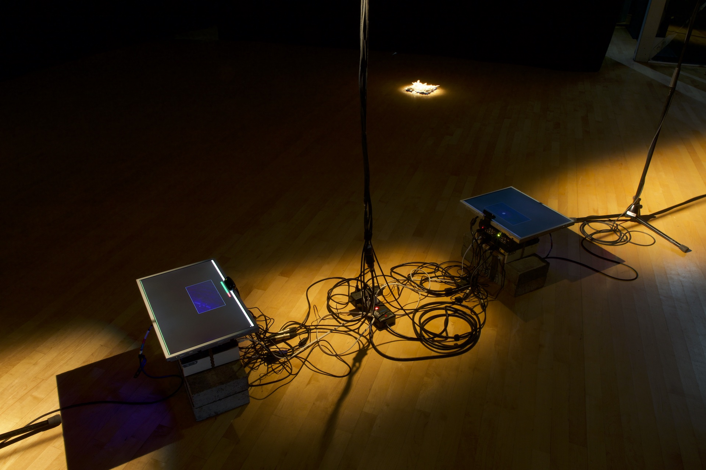

jamais sans plier l'espace, 2022.
FR //
Une vidéoconférence Zoom est repliée sur elle-même, via deux ordinateurs confinés dans un même espace. Les sons ambiants s’engouffrent dans un Larsen - feedback - aux variations perpétuelles, livrés aux aléas de la connexion internet instable. Ils transitent sous l’océan vers un serveur à l'étranger avant d’être amplifiés ici, quelques millisecondes plus tard, réabsorbés par le Larsen. Quand la pièce est vide, le bourdonnement du vide est amplifié jusqu’à saturation.
ENG //
A Zoom videoconference is folded onto itself, by two computers confined within the same rom. The ambiant sounds are absorbed into an ever-changing feedback loop, delayed and distorted by the unstable internet network. They transit back and forth under the ocean to a distant server before being being amplified here, a few milliseconds milliseconds later, reabsorbed by the feedback loop. When the room is empty, the hum of silence is amplified to saturation.
